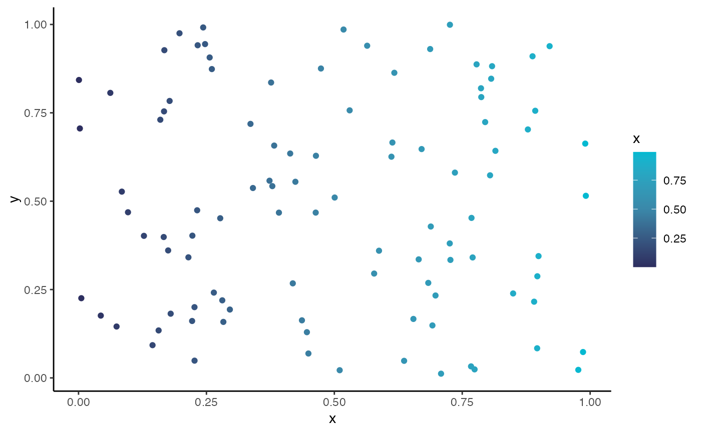

scale_colour_gradient2_hgu.RdScale Colours With A Gradient
Arguments to be passed on.
Colour for the low end of the gradient.
Colour for the midpoit of the gradient.
Colour for the high end of the gradient.
The midpoint (in data value) of the diverging scale. Defaults to 0.
Colour space in which to calculate the gradient.
Colour to be used for missing values.
Type of legend.
The aesthetic to apply this scale to.
A layer that can be added to a ggplot2 object.
library(tidyverse)
#> ── Attaching packages ─────────────────────────────────────── tidyverse 1.3.2 ──
#> ✔ ggplot2 3.3.6 ✔ purrr 0.3.4
#> ✔ tibble 3.1.8 ✔ dplyr 1.0.9
#> ✔ tidyr 1.2.0 ✔ stringr 1.4.0
#> ✔ readr 2.1.2 ✔ forcats 0.5.1
#> ── Conflicts ────────────────────────────────────────── tidyverse_conflicts() ──
#> ✖ dplyr::filter() masks stats::filter()
#> ✖ dplyr::lag() masks stats::lag()
tibble(
x = runif(100),
y = runif(100)
) %>%
ggplot(aes(x = x, y = y, colour = x)) +
geom_point() +
scale_colour_gradient2_hgu(midpoint = 0.5) +
theme_classic()
